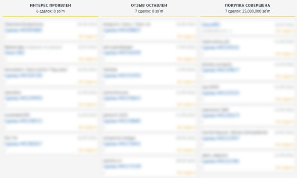
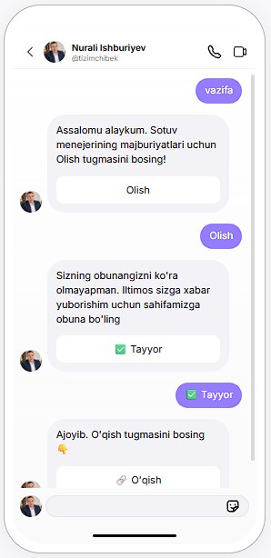

“Klinikamizni odamlar tanimaydi.”
Yangi klinika, yangi filial yoki yangi xizmat. Atrofdagi odamlar bu haqda hali bilmaydi.
Yaxshi shifokor va sifatli xizmatning o‘zi yetarli emas: bemorlar klinikangizni bilishi va unga ishonishi kerak. Instagram uchun sun’iy intellekt yordamida video va karusellar tayyorlab, klinikangizni, shifokorlaringizni va xizmatlaringizni muntazam tanitamiz.
Yangi ochilgan klinikada ham, yillardan beri ishlayotganida ham uchraydi. Shifokorlar kuchli, lekin yangi bemorlar sizni yetarlicha bilmaydi.

Yangi klinika, yangi filial yoki yangi xizmat. Atrofdagi odamlar bu haqda hali bilmaydi.
Shifokor qanchalik tajribali bo‘lmasin, uni ko‘rmagan odam qabulga yozilmaydi.
Postlar chiqadi, layklar yig‘iladi. Lekin bu klinikaga qancha bemor olib kelayotgani noma’lum.
Narx so‘ragan odam javobni kutmasdan boshqa klinikaga ketadi.
Bugun odamlar klinikani avval telefondan qidiradi. Tanilishning eng tez va arzon yo‘li shu.
Klinikaga borishdan oldin sahifangizni ochib, shifokor va xizmatlarni ko‘radi.
Shifokoringizni tanigan odam unga qabulga yozilishga tayyorroq bo‘ladi.
Bino yoki ko‘cha reklamasidan arzon. Birinchi oydan sahifangiz muntazam va professional kontent bilan to‘ladi.
Hammasi sun’iy intellekt yordamida tayyorlanadi. Siz suratga olish va montaj bilan ovora bo‘lmaysiz. Bizga klinika rasmlari va ma’lumotlarini berasiz, xolos.
10 ta video va 10 ta karusel
Har bir bosqichda nima bo‘lishini oldindan bilasiz.
Yo‘nalishingiz, shifokorlaringiz, asosiy xizmatlaringiz va maqsadlaringizni bilib olamiz.
Oy uchun mavzular: shifokorlar, xizmatlar, bemorlar ko‘p beradigan savollar.
Sun’iy intellekt yordamida, klinika rasmlari va ma’lumotlaringiz asosida.
Tibbiy ma’lumotni e’lon qilishdan oldin mutaxassisingiz tekshiradi.
Kelishilgan jadval bo‘yicha, har oy.
Har oy hisobot: qamrov, profilga tashriflar, yangi obunachilar.
Klinikangiz tanilgach, murojaatlarni yo‘qotmaslik uchun.
Paketni oktabr oxirigacha boshlagan klinikalarga bepul. Dizaynni tayyor saytlarimizdan tanlaysiz.
25 ta tayyor saytni ko‘rish ↗Har bir murojaat va bemor bitta joyda saqlanadi, hech kim esdan chiqmaydi. Qulay narxda va sifatli sozlab beramiz.

Chatplace chat-botini ulaymiz: siz uxlayotganingizda ham klinikangiz nomidan narx, manzil va qabul haqida javob beradi.

Tizimmedia asoschilari — Nurali va Malika. Har bir klinika bilan shaxsan o‘zimiz ishlaymiz.


Klinikangiz tanilgandan keyin, xohlasangiz, keyingi bosqichga o‘tamiz: bemorlar bilan ishlash va klinika jarayonlarini tizimlashtirish. Buni Biznesni Tizimlashtirish Markazida (BTM) o‘rganganmiz.
Taklif haqida qisqa javoblar.
Klinikangizga mos 2 ta video va 3 ta karusel tayyorlaymiz. Yoqsa davom etamiz, yoqmasa shu yerda to‘xtaymiz. Davom etish shart emas.
Oylik paketni oktabr oxirigacha boshlagan klinikalarga. Dizaynni web.tizimchibek.uz dagi tayyor saytlardan tanlaysiz, biz uni klinikangiz ma’lumotlari bilan to‘ldiramiz.
Yo‘q. Bizning vazifamiz: klinikangizni tanitish, Instagram sahifangizni to‘liq va ishonchli qilish. Bemorlar oqimini tizimlashtirish alohida bosqich.
Sun’iy intellekt yordamida. Shifokoringiz roziligi bilan uning AI-avatarini yasaymiz yoki xizmatlar haqida animatsion videolar va klinika rasmlaridan lavhalar tayyorlaymiz. Mavjud bo‘lmagan shifokor yoki bemorni ko‘rsatmaymiz.
Klinika va shifokorlar rasmlari, xizmatlar va narxlar ro‘yxati, hamda tibbiy ma’lumotni tasdiqlab beradigan mutaxassis.
Ismingiz va klinika yo‘nalishini qoldiring. 2 ta video va 3 ta karuselni bepul tayyorlab beramiz.